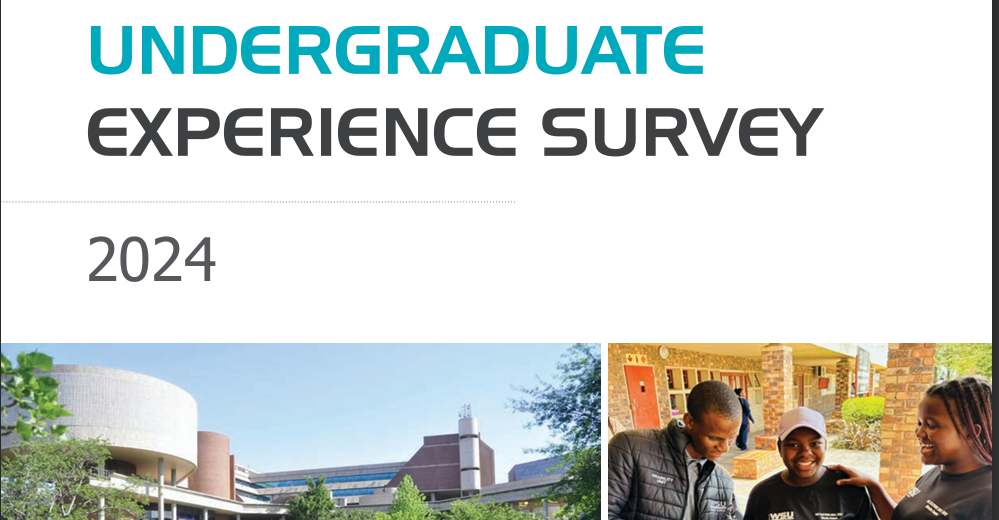
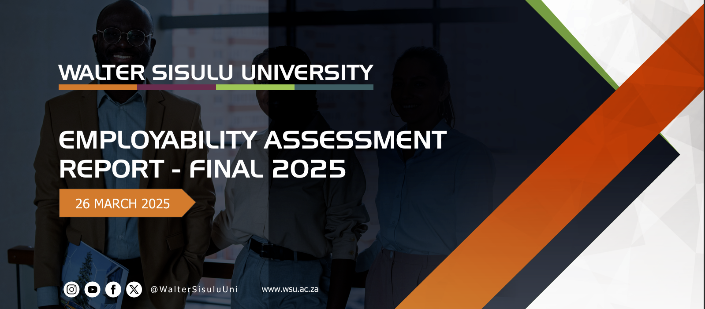
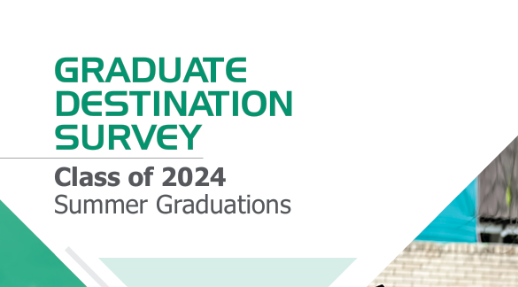

PME Releases 2024 Annual Performance Report
The PME Directorate has officially published the 2024 Annual Performance Report, highlighting key achievements across WSU.
Latest updates, stories, and featured reports from the PME Directorate.

The PME Directorate has officially published the 2024 Annual Performance Report, highlighting key achievements across WSU.

PME hosted a training session on data quality, compliance standards, and reporting protocols for all academic units.

PME introduced a new initiative to strengthen alignment between faculty operational plans and the institutional strategic plan.

A milestone inaugural survey committed to understanding and enhancing the undergraduate student journey at WSU.

Insights into graduate employment rates and skills demand across economic sectors.

Class of 2024 – insights into graduates' career trajectories and further study pursuits post-graduation.
The upcoming workshop will cover data quality, compliance standards, and reporting protocols for all academic units.
PME will host a strategic monitoring forum bringing together faculty representatives and directorate leadership.
All faculties are requested to submit verified performance data to PME by the end of the quarter.